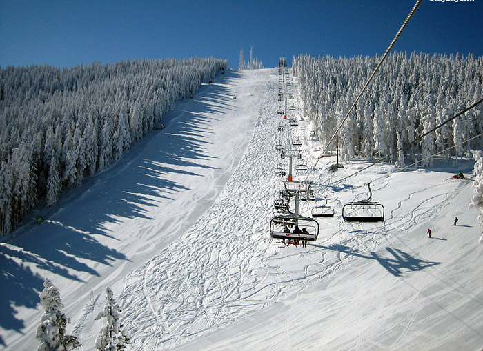
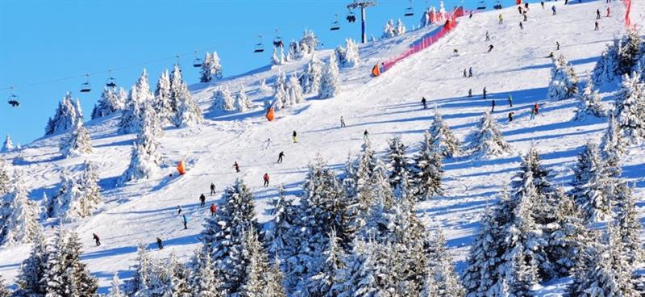
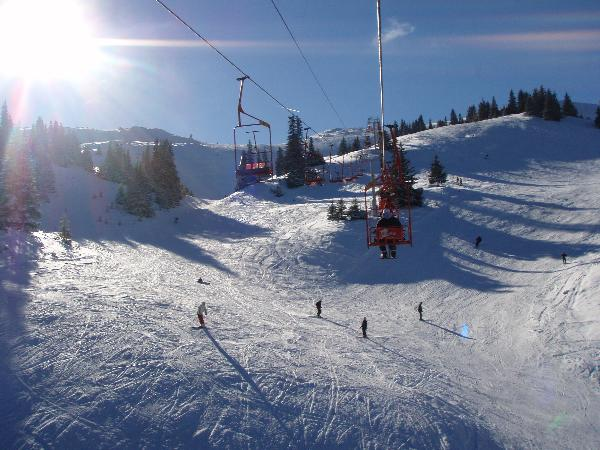

O nama
Planine
Komentari
ZLATIBOR

Zlatibor
je jedna od najatraktivnijih destinacija kada se priča o zimovanju u Srbiji. Nalazi se u Zapadnoj Srbiji na pola sata vožnje od grada Užica.
Najpopularnije mesto za skijanje na Zlatiboru je njegov najviši vrh, Tornik, sa svojih 1496 metara. Na Torniku postoje staze različitih težina pa samim tim u njegovim čarima mogu da uživaju i oni najmlađi. Postoje 2 crne, najzahtevnije staze i 4 crvene,, one malo lakše. Tornik raspolaže i sa tri žičare, jedna klasična i dva sidra. Postoje i mašine za veštačko osnežavanje što omogućava ljubiteljima snega da uživaju i duže nego što traje sezona snega.
Jedino što nedostaje Torniku je to što još uvek nisu postavljeni reflektori koji koji bi omogućili noćno skijanje.
Ponuda
KOPAONIK
Kopaonik
je još jedna planina koja se nalazi među najposećenijim u Srbiji kako leti tako i zimi. Nalazi se u Centralnoj Srbiji u blizini Kraljeva. Njegov najviši vrh je Pančićev vrh (2017m).
Zvanično je najveći ski centar u državi. Raspolaže sa 62km staza i ski puteva koji su prilagođeni i za alpsko i nordijsko skijanje. Postoje i nekoliko "ski vrtića" sa trakama gde početnici mogu da naprave svoje prve skijaške korake. Kao i na Zlatiboru, postoji veštačko osnežavanje koje je važno za produžetak sezone kada ima manje snega. Pored toga pruža i mogućnost noćnog skijanja što je posebno interesantno za sve ljubitelje ovog sporta.

Ponuda
JAHORINA

Jahorina
je takođe popularna kod skijaša iz Srbije iako se ne nalazi u našoj zemlji. Razlog za to je jer se nalazi na samo 3-4 sata vožnje od Zapadne Srbije.
Najviši vrh Jahorine je Ogorjelica sa svojih 1916m. Postoji 20km staza koje su odlično uređene. Staze su raznih težina pa mogu da ih koriste i početnici ali i oni koji se spremaju za ozbiljnija takmičenja. Naravno postoje mašine za veštačko osnežavanje i reflektori za noćno skijanje. Od ski liftova postoje gondola, 3 šestoseda i nekoliko baby liftova. Od sezone 2019/2020 na raspolaganju je i nova gondola sa kabinama od po 10.
Ono što Jahorinu čini još popularnijom jeste i mnoštvo hotela koji se nalaze u podnožju planine. Pored toga što su toliko blizu, hoteli nude i dodatne pogodnosti kao što su zatvoreni bazeni, saune, bilijar i slično.
Ponuda
1
2